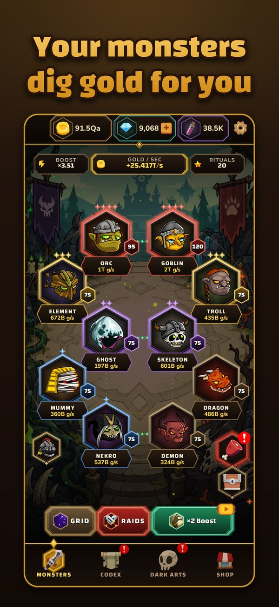
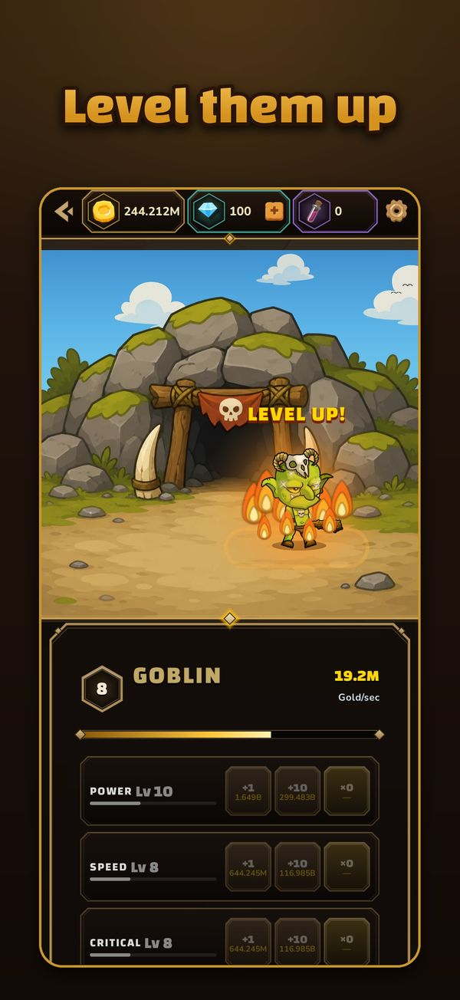
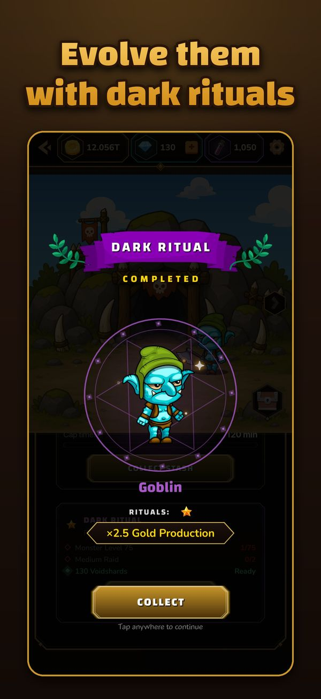
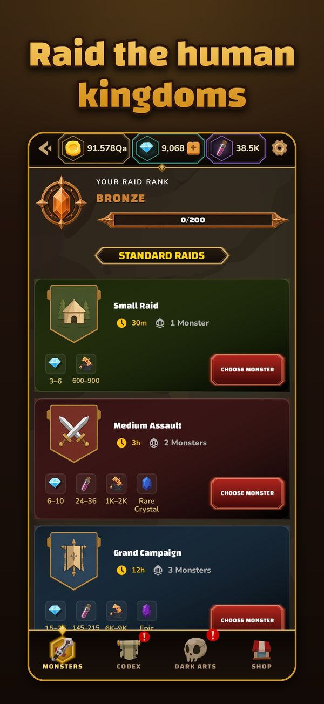
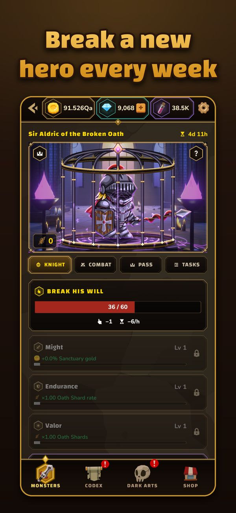
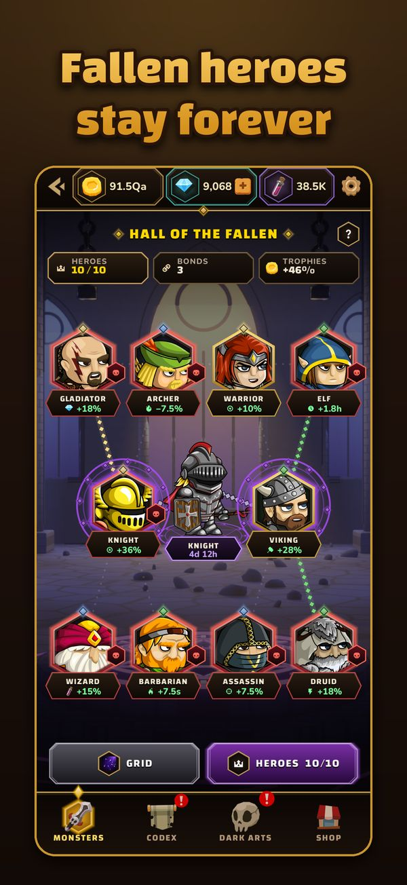

A dark fantasy idle game where your monsters dig gold
You are the Dark Alchemist. Ten monsters sleep beneath the mountains, and every one you wake digs gold for you, every second, even while the app is closed. Spend it to make them stronger, wake the next one and watch your fortune climb into the quintillions.
No account needed: a short tutorial starts you off with a Goblin, and the game opens up step by step.
Screenshots






How to play: the idle loop
- Collect. Monsters produce gold every second. After a break, a welcome-back screen hands you what they dug.
- Level up. Each monster's three traits, Power, Speed and Critical, multiply each other, so the weakest one holds it back. Its level is its lowest trait, and every new level arrives with LEVEL UP! and a burst of flames.
- Grow. Buy the next monster for an empty chamber. Each one costs far more and brings its own ability.
- Raid, forge, research. Send monsters on raids, craft gear from the loot and unlock the Dark Arts.
- Transform. At level 75 a monster is ready for its Dark Ritual.
Ten monsters, each with its own ability
- Goblin Hoards a secret stash whose multiplier climbs the longer you leave it.
- Orc Berserker Rage: a short, huge gold boost.
- Troll Scavenger mode trades a little gold for crafting material.
- Elemental Amplifies its neighbours' synergies and ignites a Storm Surge.
- Ghost Earns more while you are away than while you watch.
- Skeleton Builds a bone pool that raises your gold and can stand in for ritual raids.
- Mummy Collects Time Shards offline to boost other monsters.
- Necromancer Converts surplus crafting material into what you need.
- Demon Offers pacts every few hours. Only one can be sealed.
- Dragon The Dragon Lord strengthens all your other monsters.
Place them wisely: synergies between neighbours
Some monsters boost their neighbours, others get in their way. In GRID mode you move them and see at once what each move does to your gold.
Dark Rituals: evolve your monsters
When a monster reaches level 75 and has completed the raids its ritual asks for, a Dark Ritual transforms it for voidshards. Its traits fall back to level 1, but each ritual multiplies its gold by 2.5 and gives all your monsters 10 % more. The first and third ritual bring a new form, and after four rituals the level cap rises from 75 to 200.
Raids, loot and crafting
Raid human towns
Send your monsters against human settlements, from a 30-minute Small Raid with one monster to a day-long Epic War with four. Raids bring voidshards, research points, crystals and crafting material, and a rising raid rank opens harder human raids.
Forge weapons, armor, rings and amulets
Each monster has four gear slots. Craft its gear from its own material and crystals, from Common up to Legendary+. Every piece raises its gold.
Research the Dark Arts
Research points buy permanent upgrades for gold production, raids, Boost, offline gold, monster synergies and events. They stay through every Dark Ritual.
Fallen Heroes: a new hero every week
Every Monday a new hero of the light sits caged in a desecrated cathedral. Ten heroes take turns: Knight, Viking, Archer, Warrior, Barbarian, Assassin, Gladiator, Elf, Wizard and Druid, most with a rule of the week. The event opens on the monster map once two monsters work for you.
Break the hero's will, then fight in the arena
Every tap on the cage wears down the hero's willpower. When it breaks, the cage shatters and the hero kneels. Raise the hero with Oath Shards up to level 300, with new forms at level 100 and 200. In the arena, tap SHIELD while the shrinking ring sits inside the gold circle to parry and strike back.
The Hall of the Fallen
Heroes you raise to level 200 stay for good in the Hall of the Fallen in the Codex. The two altars count double, and every hero gives your monsters a lasting bonus.
Offline gold: idle progress while you're away
Close the app and your monsters keep digging, for four hours at first; the Dark Arts and the Hall of the Fallen raise that limit. Back after five minutes or more, you collect the gold as it is or multiply it with an optional reward video or voidshards.
Daily missions, login rewards and the Dark Feast
The Codex holds daily and weekly missions, achievements and a login calendar with chests. Once a day the Dark Feast gives all monsters +50 % gold for two hours, or +100 % with an optional video. And a daily prize wheel waits on the map.
Frequently asked questions
Is Idle Monster Forge free?
Yes, it is free to download and to play. Voidshards, the premium currency, can also be earned in the game, for example from raids, missions and the login calendar.
What can I buy?
Voidshard packs, No Ads, two permanent Production Boosts, the monthly Dark Alchemist Passes (auto-renewing subscriptions) and the weekly Hero Pass. All purchases are optional and run through the App Store.
Are there ads?
There are no forced ads. Optional reward videos give bonuses such as more offline gold, extra raid loot or a gold Boost, and you never need them to progress. With No Ads you get these rewards without the video.
Do my monsters earn gold while the game is closed?
Yes, up to your offline limit: four hours at first, more with research and the Hall of the Fallen.
Can I play without an internet connection?
Yes, the game runs without one. Reward videos and purchases need the internet.
Which devices does it run on?
Idle Monster Forge is made for iPhone and needs iOS 17 or later.
Which languages does the game speak?
19: English, German, French, Spanish, Portuguese, Italian, Dutch, Polish, Turkish, Russian, Ukrainian, Indonesian, Filipino, Vietnamese, Thai, Japanese, Korean, Chinese (Simplified) and Hindi. Switch under Settings > Language.
How do I restore my purchases?
Tap Restore Purchases at the bottom of the Shop or in Settings, signed in with the Apple ID you bought with. It brings back purchases such as No Ads and the Production Boosts.
Do I need an account?
No. There is no login, and your progress is saved on your iPhone.
What data does the game collect?
Anonymous gameplay analytics and crash reports, to fix bugs and improve the game. Reward videos come from Google AdMob, which asks for your consent where the law requires it. Apple handles all payments. The details are in the privacy policy.
How do I get help?
Write to mariohaesler@protonmail.com with your iPhone model, your iOS version and what happened. A screenshot helps.
Support and contact
Questions, a bug or an idea? Write to mariohaesler@protonmail.com.